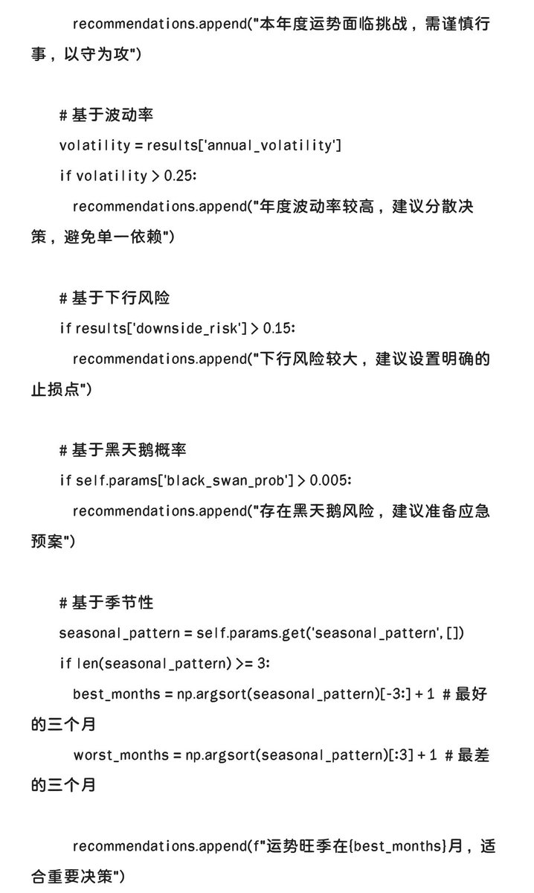
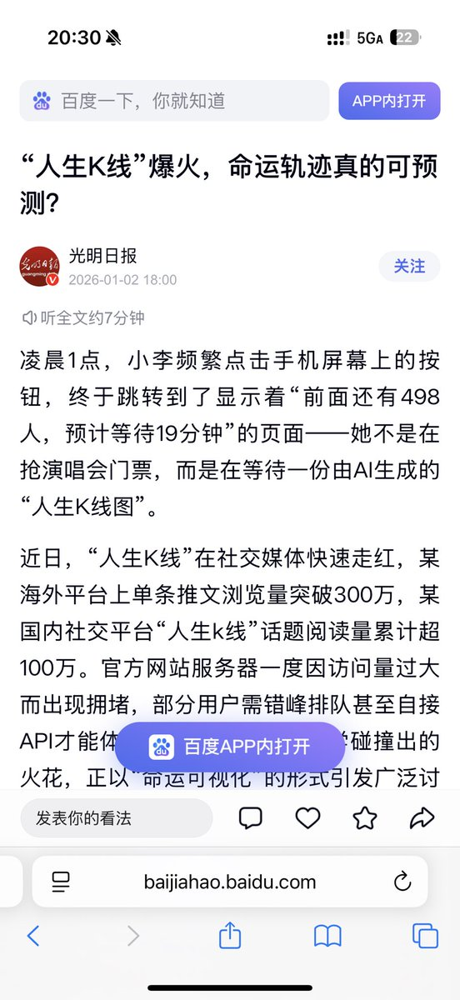

時璃風医詩🌈🏳️🌈
@hagishigure
感谢灵感。我把塔罗也用上了，用来预测黑天鹅事件。


0xSakura樱花🌸
@0xsakura666
刚刚看到《光明日报》报道了“人生K线”
第一次看到“玄学命理”的正面文章能上到这种国家级的媒体，好像此前的印象都是打压“封建迷信”，这次玄学乘上了AI时代的快车，终于有越来越多的人能够理解了。
感谢党和国家的认可，也许这次“人生K线”不只是小小玩一下，玄学命理或将成为普遍的心理需求。人生K https://t.co/A80prr2hP2